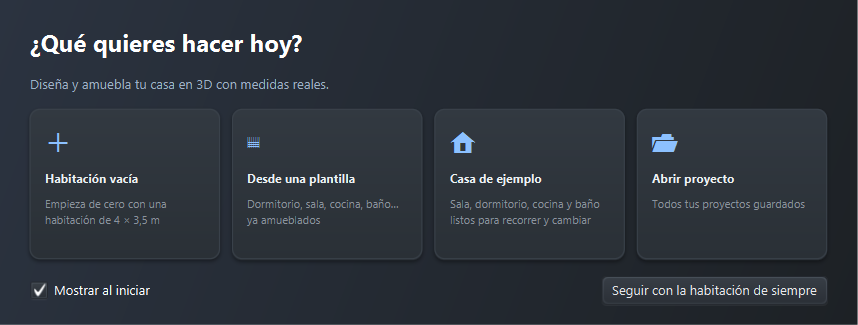
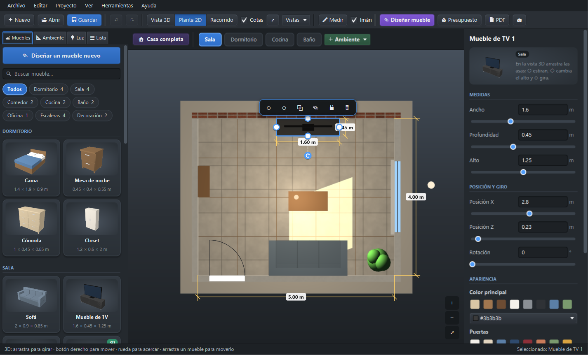
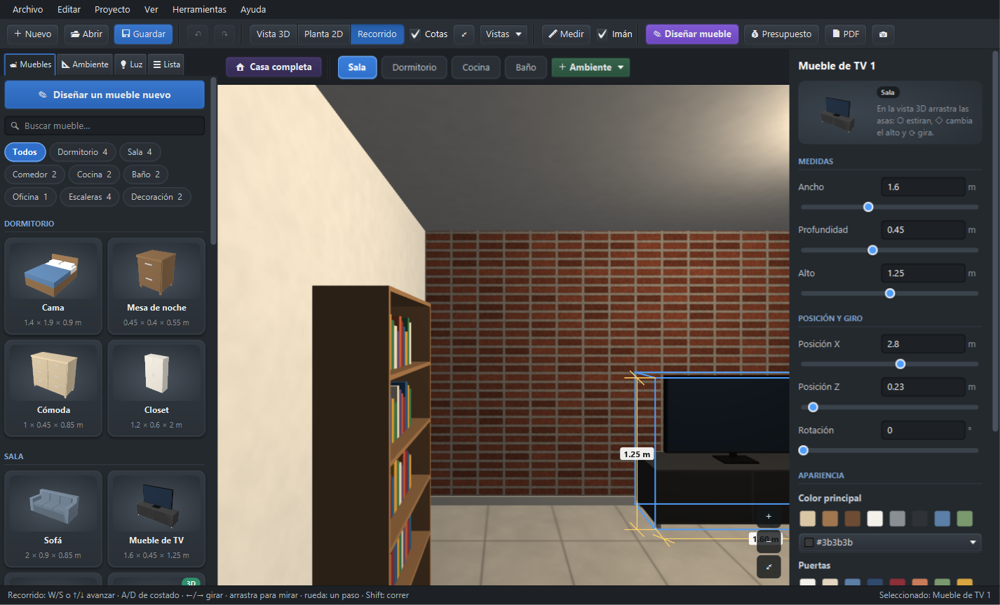
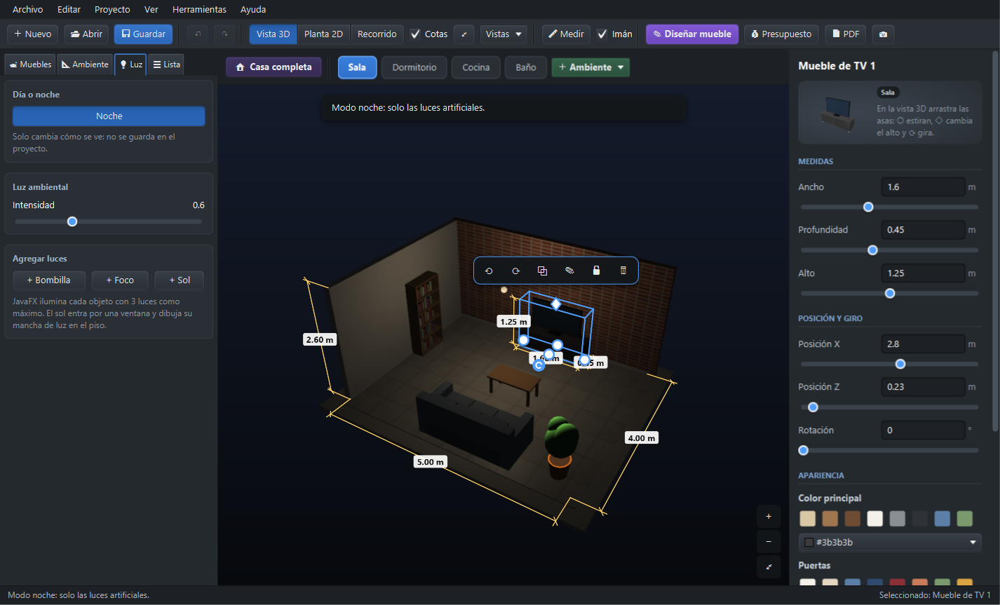
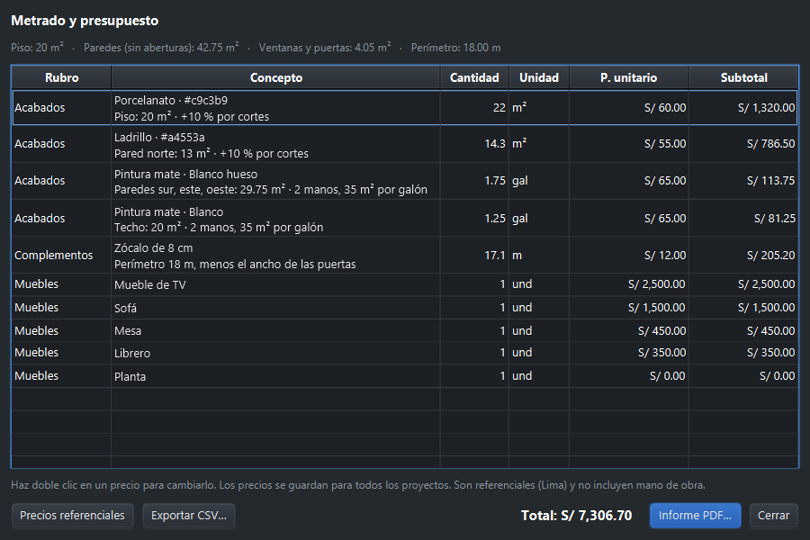

SPACE CAT
Manual de usuario
Cómo usar Space Cat para diseñar tu casa en 3D con medidas reales
Versión 1.0.0 · Para Windows 10 y 11 de 64 bits
Diseña tu casa en 3D con medidas reales
Cómo usar Space Cat para diseñar tu casa en 3D con medidas reales
Versión 1.0.0 · Para Windows 10 y 11 de 64 bits
Diseña tu casa en 3D con medidas reales
Space Cat es una aplicación para Windows que te deja dibujar los ambientes de tu casa con medidas reales, amoblarlos en 3D y saber cuánto va a costar en soles antes de comprar nada. Todo funciona sin internet y tus proyectos se guardan en tu computadora.
Con Space Cat puedes:

Al abrir Space Cat verás la pantalla de bienvenida con estas opciones:
| Opción | Para qué sirve |
|---|---|
| Nuevo proyecto | Empezar un ambiente desde cero |
| Desde una plantilla | Empezar con un dormitorio, sala, cocina, baño u oficina ya armados |
| Abrir | Continuar un proyecto guardado |
| Casa de ejemplo | Ver una casa completa ya diseñada, para explorar |

Elige Nuevo proyecto o parte de una plantilla. Escribe el ancho, el largo y el alto en metros. El ambiente aparece vacío y a escala real.

Usa + Puerta y + Ventana para colocarlas en la pared que quieras. La aplicación no deja que se superpongan ni que queden fuera de la pared.
En la pestaña Ambiente eliges el material y el color de cada pared, del piso y del zócalo: pintura, ladrillo, cerámico, madera, porcelanato y más.

Arrastra muebles desde el catálogo de la izquierda. El imán los pega a las paredes con su tamaño real. Puedes girarlos, moverlos y cambiar su medida y color en el panel derecho.
| Vista | Qué muestra |
|---|---|
| 3D | El ambiente en tres dimensiones; gira la cámara para verlo desde cualquier ángulo |
| Planta con cotas | El ambiente desde arriba, con las medidas de cada pared y cada mueble |
| Recorrido | Caminas por dentro a la altura de los ojos, sin atravesar paredes ni muebles |
| Modo noche | Apaga la luz del sol para probar si las lámparas iluminan bien de noche |


Con el ratón en la vista 3D: el botón izquierdo gira la cámara, el botón derecho la desplaza y la rueda acerca o aleja.
Si no encuentras un mueble en el catálogo, ábrelo con el Diseñador de muebles y ármalo
con cajas, cilindros, esferas y barras, midiendo todo en centímetros. También puedes importar
modelos 3D en formato .glb o .gltf con sus medidas reales.

Abre el metrado y presupuesto para ver los materiales y el costo en soles: los metros cuadrados de piso y pared, los galones de pintura, el cerámico, el zócalo y los muebles. Puedes editar cualquier precio con doble clic; se guarda para todos tus proyectos.


Space Cat hace una copia automática de tu trabajo cada minuto, así que si se cierra de golpe, al volver a abrir recuperas lo último.
| Atajo | Acción |
|---|---|
| Ctrl+S | Guardar el proyecto |
| Ctrl+Z / Ctrl+Y | Deshacer / rehacer |
| Flechas | Mover el mueble 5 cm (con Shift, 1 cm) |
| R | Girar el mueble 90° |
| Ctrl+D / Supr | Duplicar / eliminar el mueble |
| Ctrl+1 2 3 | Vista 3D, planta o recorrido |
| M | Medir distancias |
| N | Modo noche |
| Ctrl+P | Metrado y presupuesto |
Solo para descargarla. Después funciona sin conexión.
En tu propia computadora. También puedes exportar cada proyecto como un archivo para llevarlo a otra máquina.
Son precios referenciales en soles que puedes cambiar; se guardan para todos tus proyectos.
Sí: ármalos con el Diseñador de muebles o importa modelos 3D .glb o .gltf.
¿Tienes una consulta? Escríbenos por WhatsApp al 919 192 008. — Equipo FSHF